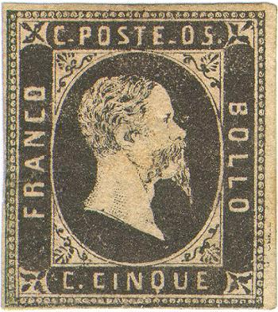
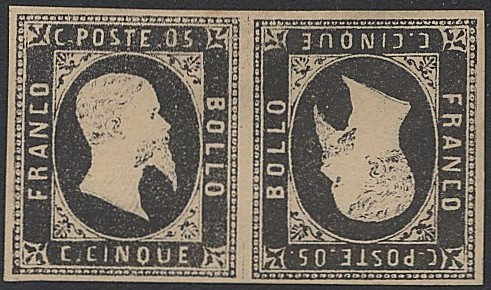
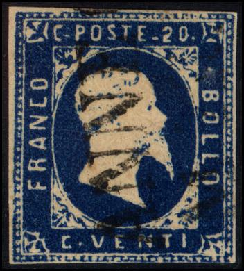
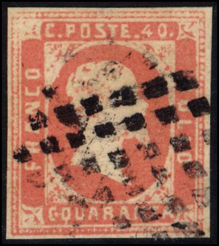
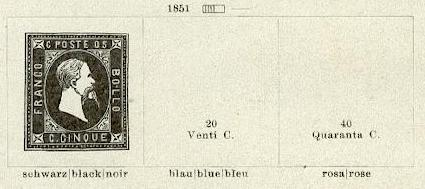
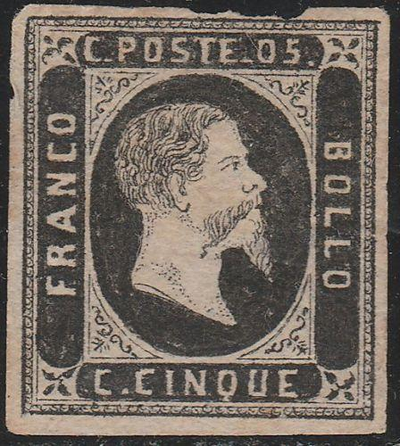

Presumably genuine stamps
Sardegna - Sardinien - Sardaigne
Return To Catalogue - Sardinia 1851 and 1853 issue - Sardinia 1854 issue - Sardinia 1855 issue - Italy
Note: on my website many of the
pictures can not be seen! They are of course present in the
catalogue;
contact me if you want to purchase the catalogue.

Presumably genuine stamps
| Number of pearls
of the genuine stamps (including corner pearls) |
||||
| top | bottom | left | right | |
| 5 c | 32 | 32 | 36 | 36 |
| 20 c | 31 | 31 | 38 | 35 |
| 40 c | 30 | 31 | 37 | 36 |
The genuine 5 c has the upper left pearl not exactly placed in
the corner
In the genuine 40 c, the curly ornaments in the upper left
triangle are touching each other (and not separated by a white
space)
Source: (https://www.ilpostalista.it/falsi/falsi025.htm)
In the 5 c and the 40 c the center of the second
"L" of "BOLLO" should be at the same height
as the end of the triangular ornament. In all the 40 c forgeries
of this type that I have seen there are two white dots behind the
"40". There are also two white dots in front of the
third "A" in "QUARANTA".
According to
http://www.numonesidentifier.com/countries/italian_state_sardinia.html
these forgeries were probably made by Francois Fournier (see also
an article by R.Lana in Linn's, November 1995). These forgeries
are also known as Geneva forgeries. I've seen the 5 c value in a
Fournier Album with a forged "TORINO 13. GIU." cancel
in two lines (see also image below with Fournier forged cancels).


For the above 20 c forgeries the second "O" of "BOLLO" should start at the end of the triangular ornament. In this forgery the "O" is placed to far down. There are some white dots just in front of the "T" of "VENTI" in the above forgeries, there are also some 'smudges' around the "I" of this word in all the forgeries I have seen. One particular forgery had written 'Zechmeyer Nurnberg Bayern' at the backside (see image above). I presume this might be a forgery sold by Zechmeyer (he is also known to have forged stamps, see 'Philatelic Forgers' by Varro. E. Tyler). I've also seen this forgery with a cancel consisting of parallel lines. This forgery is also known as the Geneva forgery (implicating Francois Fournier).
In all the above forgeries, the "C" of "FRANCO" is too rounded.
Here a page from the Fournier Album with two different kinds of 20 c forgeries:
Some other forgeries (possibly made by the forger Fournier?):
 
Forged tete-beche pair of the 5 c value. There are only 28 pearls
at the top of the 5 c forgery (should be 32). Next to it a
forgery of the 20 c apparently made by the same forger.
The forged cancels used by Fournier as shown in 'The Fournier
Album of Philatelic forgeries', I don't know on which issue
Fournier applied these forged cancels. Reduced sizes.
The forged Fournier cancels are:
"DOUVAINE 12 AVR. 53 *" in a double circle
"AIX LES BAINS 24 NOV 51 *" in a double circle
"TORINO 23 DIC 54 3 S" in a single circle
"GENOVA 15 MAR 62 1 S" in a single circle
Four parallel lines
"TORINO 13. GIU." in two lines
"ANNECY MAR. 3" in two lines (the cancel shown on the
above 20 c?)
Page from a Fournier Album with Fournier forgeries, with a 5 c
black with the illustrated "TORINO 13. GIU" forged
cancel.
Could the above forgeries be the ones mentioned in 'The Spud Papers'? The beard of the king goes straight down in these forgeries. In the 5 c, the "0" and the "5" are placed too close, similar for the 20 c and 40 c, the "2" and "4" are placed too near to the "0". They were most likely made by Spiro of Hamburg.


Forgery of the 40 c with wrong inscription "QUARANTA"
instead of "C.QUARANTA", could have been made by the
same forger as the forgeries above.
There exists bogus values in the colour 5 c green:


Some 5 c green (instead of black) forgeries. Next to it the same
forgery, but now in the correct color black. Are these also Spiro
products?

Another 5 c green forgery, but in a slightly different type (dot
in front of "05", "C." at the bottom
different, hair different etc.). Note the bogus cancels.
The 5 c is described as first forgery in Album
Weeds (see under Italy); the bottom of the "Q" of
"CINQUE" should point to a pearl, but in this forgery
it points to the empty space between two pearls. The beard is too
black and there are 31 pearls at the top of the stamp (should be
32), 34 pearls at the left hand side (should be 36) and 37 pearls
at the right hand side (should be 36). According to Album Weeds,
this forgery appeared around 1904. The lower "C" has a
"-" instead of a dot. The "0" of
"05" is too wide.
In the 20 c (described as first forgery in Album Weeds), the dot
behind the lower "C" is placed too low and exactly in
between the "C" and "V". In the genuine 20 c
stamps, it is placed higher and closer to the "C".
In the 40 c (also described as first forgery in Album Weeds),
there should be a dot behind "40", which is missing in
this forgery. The "4" also differs from the genuine
stamp (the genuine "4" has a very distinct feature at
the right hand side).
In all forgeries, the "O" of "FRANCO" is too
oval (it should be squarish). The beard and moustache
are too well done. The pearl in the left bottom corner is larger
than the other pearls. Some of the forgeries bears the cancel
"SPEZIA 1 GEN 51" (first day of issue of the genuine
stamps!).
According to
http://www.numonesidentifier.com/countries/italian_state_sardinia.html
these forgeries are made by Nino Imperato
(see also an article by R.Lana in Linn's, November 1995). They
are also known as Genoa forgeries. The Serrane guide refers to
them as the Genoa set by forger 'I.'.
These forgeries even exist pasted on letters.

Two forgeries, made by the same forger
Forgery with very large inscription "C.POSTE.20"


Another forgery of the 20 c value.

Some other forgeries of the 40 c value; possibly made by the same
forger. Note that in the bottom "C" the dot is almost
inside this "C". I've seen this forgery in a Fournier
Album:
On top left the above shown forgery with the "C.".


Very primitive forgery with "TORINO" cancel.
In all these forgeries the spots, weaknesses etc. are always printed in the same way:
Modern forgeries of the 20 c and 5 c value
Modern forgeries of the 5 c value, offered as 'reprints'; the
paper is very white, there are some white dots behind the head of
the King
A modern forgery of the 40 c. More of these forgeries for other Italian States can be
found by clicking here. There is always a white dot between
the "L" and "O" of "BOLLO" in this
forgery of the 40 c
Especially in the 20 c and 40 c forgeries, it can be seen that these forgeries have been somehow reproduced from a photograph. The beard consists of small dots when carefully inspected with a magnifying glass. The paper of these forgeries is also very modern in nature.


Sperati forgeries, second image obtained from Richard Frajola's
website: http://www.seymourfamily.com/rfrajola/Sperati/sitaly.htm

This Sperati forgery of the 5 c can be recognized
by:
1) Two white dots in the leaf ornament in the upper left corner
2) Oblique line to the right of the "P" of
"POSTE" (non clearly visible in this specimen)
3) Oblique line below the "5"
4) Besides the "R" of "FRANCO" there is a
white dot
5) Parts of a line can be found outside the right hand side
frameline.
6) This stamp is photo-lithographed.
I've seen the above Sperati forgeries in black and greyish shade:
Black and greyish shade Sperati forgeries of the 5 c value.
Sperati also made forgeries of the 40 c value:


Sperati forgeries, first image obtained from Richard Frajola's
website: http://www.seymourfamily.com/rfrajola/Sperati/sitaly.htm

Sperati reproductions 'A' and 'B'.
Sperati's forged cancels as used on these stamps, reduced sizes;
Three different dot cancels and three circular cancels:
"GENOVA 7 GIU 52 9 M", "SASSARI 26 MAG 52 9
M" and "SASSARI 22 NOV 53".
Some other Sperati forged cancels.

(I have serious doubts about this stamp, it is probably a
forgery)

Another very dubious 5 c item with neatly combed hair.


{kind=link}
{kind=link}
{kind=link}
{kind=link}
{kind=link}
{kind=link}
{kind=link}
{kind=link}
{kind=link}
{kind=link}